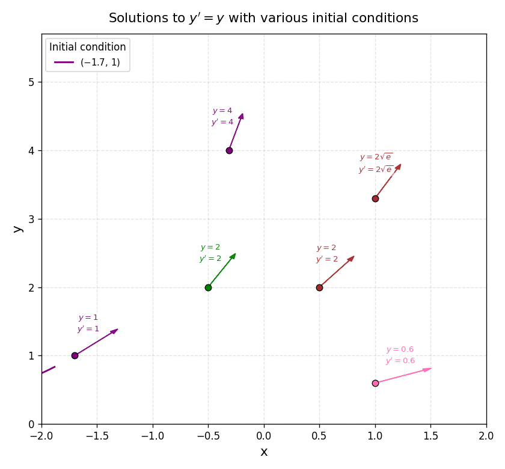

In \( y' = y \) the slope equals the height. The solutions are the exponentials
The animation draws four solutions one after another; at marked points the tangent arrow shows the slope equalling the current value of \( y \).
